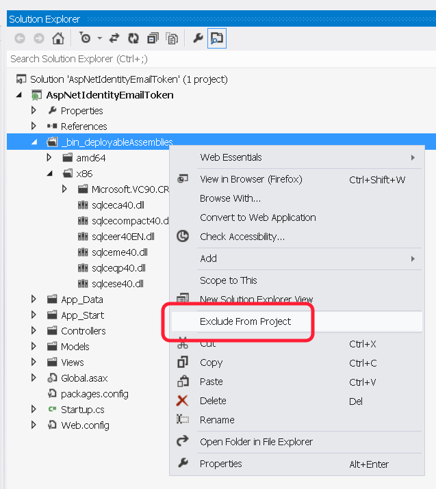
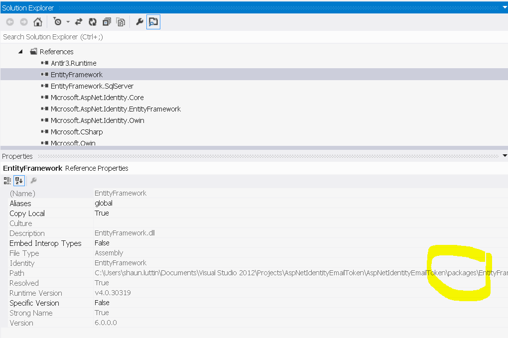
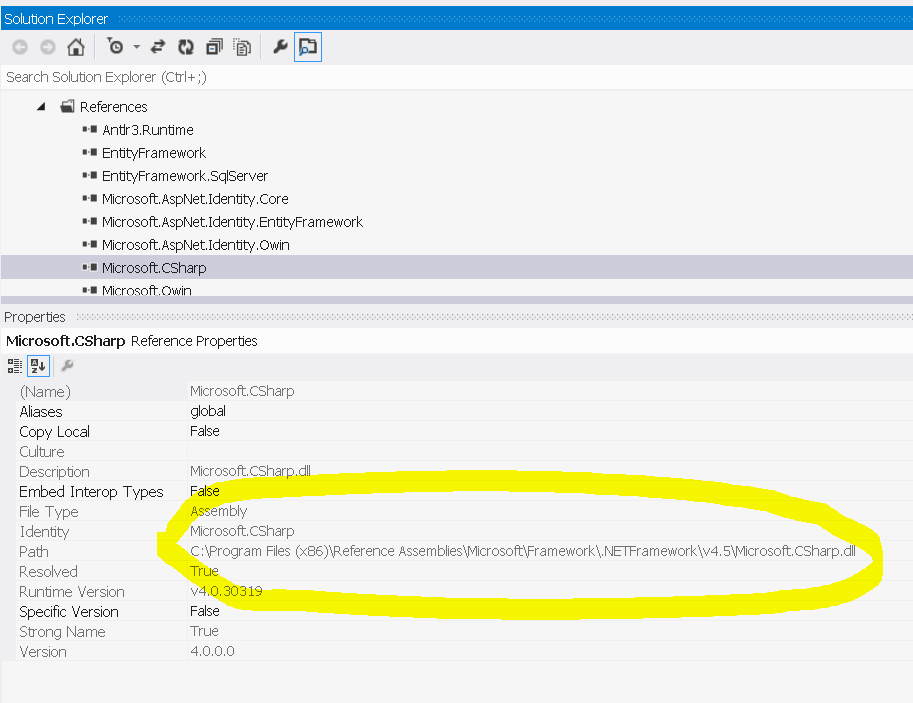
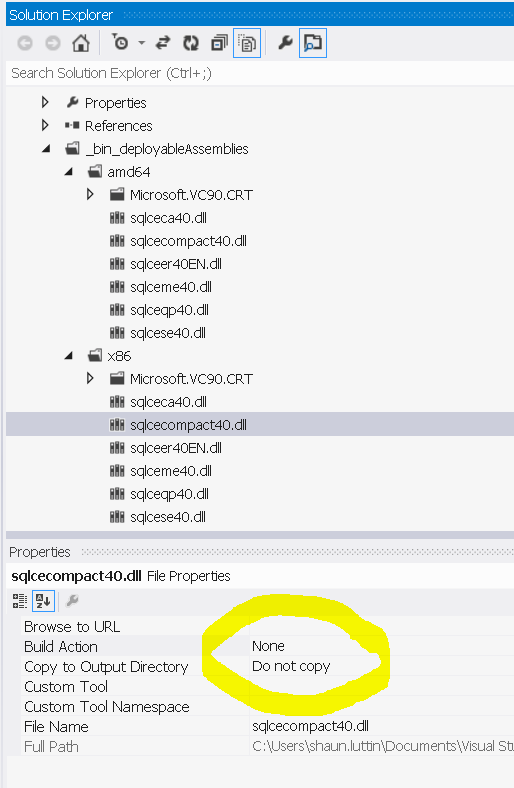
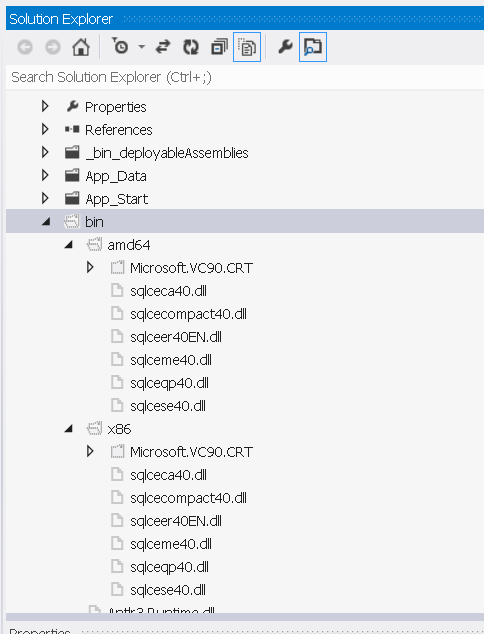

Git Deploy to Azure Web App While Keeping Assemblies out of Version Control
Visual Studio -> GitHub -> Azure Web App
How do we keep all assemblies (dll files) and other build results out of version control?
Sure, we can do this...
git rm --cached *.dll
git rm --cached bin\*
git rm --cached obj\*
...but it might cause a few problems.
error MSB3030: Could not copy the file someFile.dll because it was not found.
That's because we ran git rm --cached *.dll, which means that any assemblies that we need to deploy are still going to be part of the project without being deployed to Azure.
To fix that, we could exclude any *.dll files from our *.csproj. The problem though is that we need to reference these assemblies, they aren't part of the framework, and NuGet doesn't handle them appropriately.
Don't Do This:

If we did do that, we might receive an error similar to this, because the Azure Web App is missing the assemblies that we excluded from the project.
Server Error in '/' Application.
Unable to load the native components of SQL Server Compact corresponding to the ADO.NET provider of version 8876. Install the correct version of SQL Server Compact. Refer to KB article 974247 for more details.
Description: An unhandled exception occurred during the execution of the current web request. Please review the stack trace for more information about the error and where it originated in the code.
Exception Details: System.Data.SqlServerCe.SqlCeException: Unable to load the native components of SQL Server Compact corresponding to the ADO.NET provider of version 8876. Install the correct version of SQL Server Compact. Refer to KB article 974247 for more details.
That's happening because we have an assembly on our local machine, that we've excluded from version control and excluded from our project. The Azure Web App needs it.
To resolve this, look at the location of each assembly that the *.csproj references. If we're using Visual Studio, here's how.
- Open the Solution Explorer.
- Expand the References node.
- Press
F4to open the Properties Window. - Click through all the references to see the path of each.
Here are some examples. Ideally, we can have NuGet handle most if not all of them.
NuGet handles this assembly.
We know because the Path points to the packages directory. We don't have to add it to version control.

The framework handles this assembly.
We don't have to add it to version control, because it's in \Reference Assemblies\Microsoft\Framework\...

We must handle these.
NuGet doesn't add these to the packages directory nor framework doesn't contain these. So, we need to add them to our version control, include them in our csproj, and set the properties to
Build Action: None
Copy to Output Directory: Do Not Copy

The result, oddly enough is to add the assembly to the bin on build.

Now, our repository does contain some assemblies, and there doesn't seem to be any way around this. If you know a way to keep assemblies out of the repository in situation like that, please chat me up on Twitter.